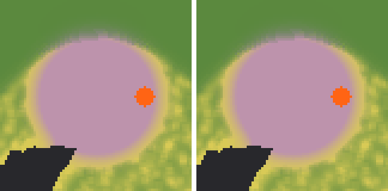

<title>Gas Ignites</title>
<meta name="claude:viewport-fit-sides" content="cover">
<link rel="stylesheet" href="https://fonts.googleapis.com/css2?family=Inter:wght@400;600&family=Space+Grotesk:wght@500;700&display=swap">
<style>
:root { --bg:#f6f3ec; --fg:#1d1b17; --muted:#6b655a; --card:#fffdf8; --line:#e2dccf; --accent:#c4520f; }
@media (prefers-color-scheme: dark) { :root:not([data-theme="light"]) { --bg:#16140f; --fg:#ece6d8; --muted:#a39b8a; --card:#201d16; --line:#37322a; --accent:#f08a47; color-scheme:dark } }
:root[data-theme="dark"] { --bg:#16140f; --fg:#ece6d8; --muted:#a39b8a; --card:#201d16; --line:#37322a; --accent:#f08a47; color-scheme:dark }
body { background:var(--bg); color:var(--fg); font:15px/1.55 Inter, system-ui, sans-serif; padding-left:max(16px, env(safe-area-inset-left, 0px)); padding-right:max(16px, env(safe-area-inset-right, 0px)); padding-block:24px 48px }
main { max-width:1100px; margin:0 auto }
h1, h2 { font-family:"Space Grotesk", Inter, sans-serif; text-wrap:balance; line-height:1.2 }
h1 { font-size:1.9rem; margin:0 0 .3rem }
h2 { font-size:1.25rem; margin:2rem 0 .5rem }
p, ul { max-width:72ch }
.sub { color:var(--muted); margin:0 0 1.2rem }
figure { margin:1rem 0; background:var(--card); border:1px solid var(--line); border-radius:10px; padding:10px }
figure img { display:block; width:100%; border-radius:6px }
.labels { display:grid; grid-template-columns:repeat(2, 1fr); gap:10px; font-size:.85rem; margin-top:.5rem }
.labels b { display:block; font-family:"Space Grotesk", Inter, sans-serif; font-size:1rem }
.labels span { color:var(--muted) }
figcaption { color:var(--muted); font-size:.9rem; margin-top:.6rem }
.wrap { overflow-x:auto }
table { border-collapse:collapse; font-size:.9rem; min-width:640px; width:100% }
th, td { text-align:right; padding:6px 9px; border-bottom:1px solid var(--line); font-variant-numeric:tabular-nums }
th:first-child, td:first-child { text-align:left }
th { font-weight:600; color:var(--muted) }
b.k { color:var(--accent) }
.key { display:flex; flex-wrap:wrap; gap:14px; font-size:.85rem; color:var(--muted); margin:.4rem 0 0 }
.key i { display:inline-block; width:12px; height:12px; border-radius:3px; vertical-align:-1px; margin-right:5px }
</style>
<main>
<h1>Gas ignites</h1>
<p class="sub">Simulation-use plan step C5, 2026-11-17. Sleep gas over <code>gas_burn</code> (0.2, where it puts the slime to sleep) is fuel: a fire that reaches it flashes across the cloud and burns what sleeps there, damp body or not. On by default, on both engines. CPU probe: planet 2 under full meadow, the default slime (shape C) grown 60 s; the toolkit's sleep gas laid on its body, and 1 s later a small fire lit at the cloud's east edge. One frame every third of a game second for the first 6 s, then every second; played about 1.7 times real speed, then 3 times.</p>
<div class="key"><span><i style="background:#d8cc5a"></i>slime (by its trail)</span><span><i style="background:#968c8c"></i>slime cut off from food news (the sleepers)</span><span><i style="background:#aa6ee6"></i>gas cloud</span><span><i style="background:#e0661c"></i>fire</span><span><i style="background:#5c8a3c"></i>meadow</span></div>

<h2>Seed 1, off and on</h2>
<figure>

<div class="labels">
<div><b>Off (0)</b><span>0 walkers killed by fire; 1,969 asleep at the light</span></div>
<div><b>On (0.2)</b><span>1,271 killed by fire in 15 s, most within 3 s</span></div>
</div>
<figcaption>Off, the damp body puts the fire out at once and the gas only sleeps. On, the fire catches the cloud and runs across it, using it up, and the sleepers in it burn. The grey ring left after is the cloud's thin rim, under 0.2, which did not burn.</figcaption>
</figure>

<h2>Eight seeds</h2>
<p>Walkers killed by fire in the 15 s after the light.</p>
<div class="wrap"><table>
<tr><th>Seed</th><th>Asleep at the light</th><th>Off</th><th>On</th></tr>
<tr><td>1</td><td>1,969</td><td>0</td><td><b class="k">1,271</b></td></tr><tr><td>2</td><td>1,605</td><td>0</td><td><b class="k">967</b></td></tr><tr><td>3</td><td>1,985</td><td>0</td><td><b class="k">1,181</b></td></tr><tr><td>4</td><td>2,075</td><td>0</td><td><b class="k">1,196</b></td></tr><tr><td>5</td><td>1,928</td><td>0</td><td><b class="k">1,224</b></td></tr><tr><td>6</td><td>2,007</td><td>0</td><td><b class="k">1,215</b></td></tr><tr><td>7</td><td>22</td><td>0</td><td><b class="k">0</b></td></tr><tr><td>8</td><td>733</td><td>6</td><td><b class="k">482</b></td></tr>
<tr><td>Sum</td><td></td><td>6</td><td>7,536</td></tr>
</table></div>
<ul>
<li>More burned on 7 of 8 seeds, none fewer (sign p 0.016). On seed 7 the disc held 22 walkers and nothing lit.</li>
<li>The fire burns 58-66% of the sleepers. The rest sit on the cloud's thin rim.</li>
<li>The body's size comes back within 15 s (the living were within 0.1% either way): the default slime is at its cap and refills the freed slots. What the flash buys is a hole and the time it takes to refill.</li>
</ul>

<h2>Try it</h2>
<p>Double-click <code>play.cmd</code>, start a free game, select a squad and press E for the tools page. Throw sleep gas on the slime where plants grow, then a blast at the cloud's edge. In a run, a Mist round and then a Scorch or a Torch does the same.</p>
</main>
